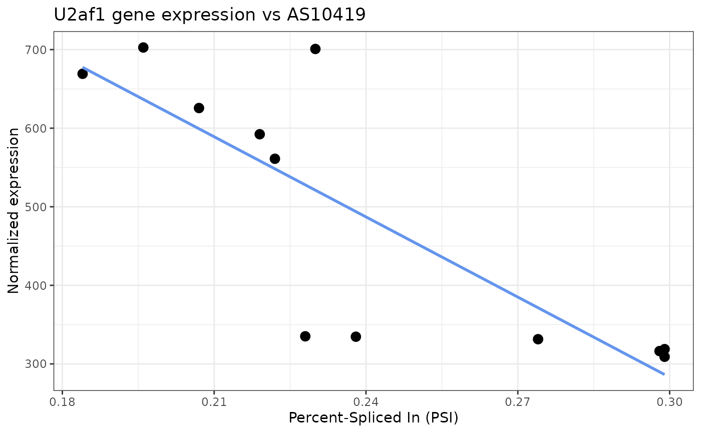
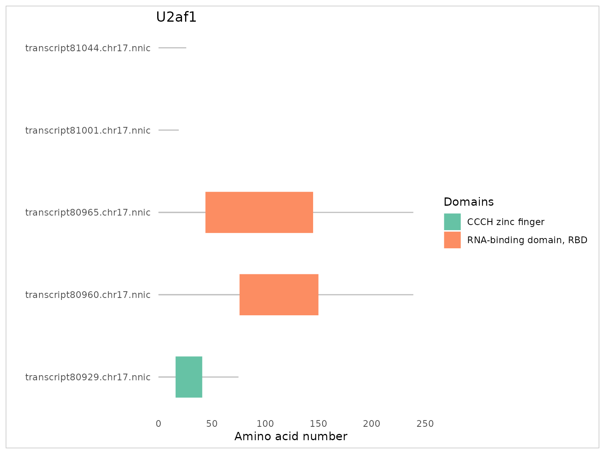

factR2.RmdMany eukaryotic genes undergo alternative splicing to produce multiple RNA isoforms, thus expanding the coding and regulatory potential of the genome. The transcriptome of specific biological samples are constructed from high throughput sequencing experiments by mapping short or long reads to a reference genome and assembling alignments into transcript architectures. The resulting Gene Transfer Format (GTF) files describe newly identified transcripts as sets of exonic coordinates, but they do not contain information about the coding sequences (CDSs; also known as ORFs) or possible biological functions of these transcripts. We previously published {factR}, an R package for the construction of CDSs for novel RNA isoforms. {factR} also predicts the domain organisation of the protein products of these isoforms, and identifies transcripts that are susceptible to nonsense-mediated decay (NMD; a pathway destabilizing mRNAs with premature translation termination codons).
This new version of {factR}, called {factR2}, extends the functionality of its predecessor by adding tools to probe for the regulatory potential of alternative exons and enhances its user-friendliness by adopting an R object class. {factR2} pinpoints alternative splicing events that trigger NMD, and it tests this regulation by correlating exon splicing inclusion with gene expression level. Additional features of {factR2} include direct quantification of exonic sequence conservation scores, an interactive visualisation of transcript and domain architectures and a two-way plot of expression or exon splicing levels.
{factR2} is currently available on GitHub and can be installed using {devtools}:
# install.packages("devtools")
devtools::install_github("f-hamidlab/factR2"){factR2} only requires a custom transcriptome file in GTF
format as input. This file is typically generated by short-read
assemblers such as StringTie2 (Kovaka et al. 2019)
and Cufflinks,
(Trapnell et al. 2012) or by long-read
aligners such as minimap2
(Li 2018) and Isoquant (Prjibelski et al. 2023). We provide a sample
custom transcriptome file assembled from PacBio HiFi data using Isoquant
that can be used to test {factR2} functionalities (see “Creating a factRObject” for
more details).
Several {factR2} functions require reference genomic sequences and transcript annotations. To make it easy for users to obtain these files, we provide a convenient system to retrieve reference files of common model organisms from the GENCODE and Ensembl databases. Users may optionally use their own reference files as inputs.
The following packages are required to perform this workflow:
User-input custom transcriptome data are stored and analysed as part of an S4 class structure called factRObject. To create a factRObject, users can provide the local path to their custom GTF file, or a {GenomicRanges} object containing transcript architecture information of custom transcriptome. {factR2} comes with a sample GTF file assembled from long-read sequences of transcripts from postnatal mouse brain cortex (Joglekar et al. 2023). The local path to this GTF file can be retrieved as follows:
gtf.file <- system.file("extdata/pb_custom.gtf.gz", package = "factR2")In addition to a custom GTF file, users are required to define the
genome used for read assembly. This is done by providing input to the
reference argument and accepted inputs include the name of
the organism (“Homo sapiens” or “Human”) or the specific ID
of {factR2} supported genomes. This ID list can be retrieved by
running the listSupportedGenomes() in console:
listSupportedGenomes()
#> ID species database release.date
#> 1 v44 Homo sapiens GENCODE 7.2023
#> 2 v43 Homo sapiens GENCODE 2.2023
#> 3 v42 Homo sapiens GENCODE 10.2022
#> 4 v41 Homo sapiens GENCODE 7.2022
#> 5 v40 Homo sapiens GENCODE 4.2022
#> 6 v39 Homo sapiens GENCODE 12.2021
#> 7 v38 Homo sapiens GENCODE 5.2021
#> 8 v37 Homo sapiens GENCODE 2.2021
#> 9 v36 Homo sapiens GENCODE 10.2020
#> 10 v35 Homo sapiens GENCODE 8.2020
#> 11 v34 Homo sapiens GENCODE 4.2020
#> 12 v33 Homo sapiens GENCODE 1.2020
#> 13 v32 Homo sapiens GENCODE 9.2019
#> 14 v31 Homo sapiens GENCODE 6.2019
#> 15 v30 Homo sapiens GENCODE 4.2019
#> 16 v29 Homo sapiens GENCODE 10.2018
#> 17 v28 Homo sapiens GENCODE 4.2018
#> 18 v27 Homo sapiens GENCODE 8.2017
#> 19 v26 Homo sapiens GENCODE 3.2017
#> 20 v25 Homo sapiens GENCODE 7.2016
#> 21 v24 Homo sapiens GENCODE 12.2015
#> 22 v23 Homo sapiens GENCODE 7.2015
#> 23 v22 Homo sapiens GENCODE 3.2015
#> 24 v21 Homo sapiens GENCODE 10.2014
#> 25 v20 Homo sapiens GENCODE 8.2014
#> [ reached 'max' / getOption("max.print") -- omitted 11 rows ]With these inputs, a factRObject can be created as follows:
fobj <- createfactRObject(gtf.file, reference = "vM33")
#> 🡆 Checking inputs
#> 🡆 Checking factRObject
#> 🡆 Adding custom transcriptome
#> ℹ Importing from local directory
#> 🡆 Adding annotation
#> ℹ Importing from URL
#> 🡆 Adding genome sequence
#> ℹ Using BSgenome object
#> 🡆 Matching chromosome names
#> 🡆 Matching gene information
#> Number of mismatched gene_ids found: 83520
#> --> Attempting to match ensembl gene_ids...
#> --> No ensembl gene ids found in query
#> ---> Attempting to match gene_ids by finding overlapping coordinates...
#> ---> 65203 gene_id matched
#> Total gene_ids corrected: 65203
#> Remaining number of mismatched gene_ids: 18317
#> 🡆 Creating factRset objects
#>
#> ℹ Adding gene information
#>
#> ℹ Adding transcript information
#>
#> ℹ Adding alternative splicing information
#>
#> 🡆 Annotating novel transcripts
#>
#> 🡆 Annotating novel AS events
#>
#> ℹ factRobject created!The function above extracts and stores gene-, transcript- and exon-level information from a custom GTF file and, by default, corrects for inconsistencies in gene annotation to the reference transcriptome.
{factR2} comes with wrapper functions to access the information stored within a factRObject. A preview of the object’s contents can be printed by typing the variable name:
fobj
#> class: factRObject [version 0.99.0]
#> # transcriptome:
#> 36931 genes;
#> 115055 transcripts [99855 novel];
#> 0 coding transcripts
#> # active set: AS
#> # samples (0):Transcripts that contain distinct sets of internal exons are defined as “novel”. Note that the sample GTF lack coding sequence information and thus, none of the transcripts are currently annotated as “coding”.
The metadata of genes, transcripts and exons are segregated into
individual “set” data in a factRObject. One of these “set” data
will be assigned as the active “set” and users may switch the active
“set” using the activeSet() function:
activeSet(fobj) <- "transcript"The exact names of the “set” can be printed out using
listSets():
listSets(fobj)
#> [1] "gene" "transcript" "AS"The metadata associated with the current active “set” can be
displayed as a dataframe using the features() function:
features(fobj)
#> # A tibble: 115,055 × 8
#> transcript_id gene_id gene_name strand width novel cds nmd
#> <chr> <chr> <chr> <fct> <int> <chr> <chr> <chr>
#> 1 transcript51190.chr3.nnic ENSMUSG0… Gnai3 - 1333 yes no no
#> 2 transcript62347.chr16.nnic ENSMUSG0… Cdc45 - 2279 yes no no
#> 3 transcript62383.chr16.nnic ENSMUSG0… Cdc45 - 679 yes no no
#> 4 transcript62392.chr16.nnic ENSMUSG0… Cdc45 - 2282 yes no no
#> 5 transcript45445.chrX.nnic ENSMUSG0… Scml2 + 1237 yes no no
#> 6 transcript45454.chrX.nnic ENSMUSG0… Scml2 + 677 yes no no
#> 7 transcript45461.chrX.nnic ENSMUSG0… Scml2 + 451 yes no no
#> 8 transcript45463.chrX.nnic ENSMUSG0… Scml2 + 669 yes no no
#> 9 transcript45465.chrX.nnic ENSMUSG0… Scml2 + 464 yes no no
#> 10 transcript45467.chrX.nnic ENSMUSG0… Scml2 + 425 yes no no
#> # ℹ 115,045 more rowsTo show more columns as an R dataframe, set show_more
argument to TRUE:
features(fobj, show_more = TRUE)
#> transcript_id gene_id
#> transcript51190.chr3.nnic transcript51190.chr3.nnic ENSMUSG00000000001.5
#> transcript62347.chr16.nnic transcript62347.chr16.nnic ENSMUSG00000000028.16
#> transcript62383.chr16.nnic transcript62383.chr16.nnic ENSMUSG00000000028.16
#> transcript62392.chr16.nnic transcript62392.chr16.nnic ENSMUSG00000000028.16
#> transcript45445.chrX.nnic transcript45445.chrX.nnic ENSMUSG00000000037.18
#> transcript45454.chrX.nnic transcript45454.chrX.nnic ENSMUSG00000000037.18
#> transcript45461.chrX.nnic transcript45461.chrX.nnic ENSMUSG00000000037.18
#> transcript45463.chrX.nnic transcript45463.chrX.nnic ENSMUSG00000000037.18
#> transcript45465.chrX.nnic transcript45465.chrX.nnic ENSMUSG00000000037.18
#> transcript45467.chrX.nnic transcript45467.chrX.nnic ENSMUSG00000000037.18
#> transcript93435.chr11.nnic transcript93435.chr11.nnic ENSMUSG00000000049.12
#> transcript93455.chr11.nnic transcript93455.chr11.nnic ENSMUSG00000000049.12
#> gene_name strand width novel cds nmd
#> transcript51190.chr3.nnic Gnai3 - 1333 yes no no
#> transcript62347.chr16.nnic Cdc45 - 2279 yes no no
#> transcript62383.chr16.nnic Cdc45 - 679 yes no no
#> transcript62392.chr16.nnic Cdc45 - 2282 yes no no
#> transcript45445.chrX.nnic Scml2 + 1237 yes no no
#> transcript45454.chrX.nnic Scml2 + 677 yes no no
#> transcript45461.chrX.nnic Scml2 + 451 yes no no
#> transcript45463.chrX.nnic Scml2 + 669 yes no no
#> transcript45465.chrX.nnic Scml2 + 464 yes no no
#> transcript45467.chrX.nnic Scml2 + 425 yes no no
#> transcript93435.chr11.nnic Apoh + 1389 yes no no
#> transcript93455.chr11.nnic Apoh + 1020 yes no no
#> [ reached 'max' / getOption("max.print") -- omitted 115043 rows ]To display transcripts expressed from a particular gene, users can
provide IDs or names of genes as input to the second argument of
features(). For example, to query for the transcripts from
U2af1 gene, we can type:
features(fobj, "U2af1", show_more = TRUE)
#> transcript_id gene_id
#> transcript80929.chr17.nnic transcript80929.chr17.nnic ENSMUSG00000061613.14
#> transcript80960.chr17.nnic transcript80960.chr17.nnic ENSMUSG00000061613.14
#> transcript80965.chr17.nnic transcript80965.chr17.nnic ENSMUSG00000061613.14
#> transcript81001.chr17.nnic transcript81001.chr17.nnic ENSMUSG00000061613.14
#> transcript81044.chr17.nnic transcript81044.chr17.nnic ENSMUSG00000061613.14
#> gene_name strand width novel cds nmd
#> transcript80929.chr17.nnic U2af1 - 1038 no no no
#> transcript80960.chr17.nnic U2af1 - 971 no no no
#> transcript80965.chr17.nnic U2af1 - 971 no no no
#> transcript81001.chr17.nnic U2af1 - 842 yes no no
#> transcript81044.chr17.nnic U2af1 - 785 no no noMultiple genes can be displayed by providing additional gene names:
features(fobj, "U2af1", "U2af2", show_more = TRUE)
#> transcript_id gene_id
#> transcript2976.chr7.nnic transcript2976.chr7.nnic ENSMUSG00000030435.17
#> transcript2982.chr7.nnic transcript2982.chr7.nnic ENSMUSG00000030435.17
#> transcript3019.chr7.nnic transcript3019.chr7.nnic ENSMUSG00000030435.17
#> transcript3021.chr7.nnic transcript3021.chr7.nnic ENSMUSG00000030435.17
#> transcript80929.chr17.nnic transcript80929.chr17.nnic ENSMUSG00000061613.14
#> transcript80960.chr17.nnic transcript80960.chr17.nnic ENSMUSG00000061613.14
#> transcript80965.chr17.nnic transcript80965.chr17.nnic ENSMUSG00000061613.14
#> transcript81001.chr17.nnic transcript81001.chr17.nnic ENSMUSG00000061613.14
#> transcript81044.chr17.nnic transcript81044.chr17.nnic ENSMUSG00000061613.14
#> gene_name strand width novel cds nmd
#> transcript2976.chr7.nnic U2af2 + 1191 no no no
#> transcript2982.chr7.nnic U2af2 + 1800 yes no no
#> transcript3019.chr7.nnic U2af2 + 790 yes no no
#> transcript3021.chr7.nnic U2af2 + 1354 yes no no
#> transcript80929.chr17.nnic U2af1 - 1038 no no no
#> transcript80960.chr17.nnic U2af1 - 971 no no no
#> transcript80965.chr17.nnic U2af1 - 971 no no no
#> transcript81001.chr17.nnic U2af1 - 842 yes no no
#> transcript81044.chr17.nnic U2af1 - 785 no no noTo quickly display the metadata of a different “set”, users may
modify the set argument:
features(fobj, "U2af1", set = "AS", show_more = TRUE)
#> AS_id gene_id gene_name coord AStype
#> AS06864 AS06864 ENSMUSG00000061613.14 U2af1 chr17:31870620-31870686 CE
#> AS06865 AS06865 ENSMUSG00000061613.14 U2af1 chr17:31871476-31871542 CE
#> AS06866 AS06866 ENSMUSG00000061613.14 U2af1 chr17:31873953-31874040 CE
#> strand width novel
#> AS06864 - 67 no
#> AS06865 - 67 no
#> AS06866 - 88 noor use convenient wrapper functions (see ?factR-meta for
more):
ase(fobj, "U2af1", show_more = TRUE)
#> AS_id gene_id gene_name coord AStype
#> AS06864 AS06864 ENSMUSG00000061613.14 U2af1 chr17:31870620-31870686 CE
#> AS06865 AS06865 ENSMUSG00000061613.14 U2af1 chr17:31871476-31871542 CE
#> AS06866 AS06866 ENSMUSG00000061613.14 U2af1 chr17:31873953-31874040 CE
#> strand width novel
#> AS06864 - 67 no
#> AS06865 - 67 no
#> AS06866 - 88 noEach alternative splicing event has been assigned a internal unique ID for easy referencing and this can be found in the column “AS_id”.
The above features() function and other similar assessor
functions outputs a dataframe that can be saved as a new variable for
further wrangling. Alternatively, the output dataframe can be directly
piped to downstream functions. In the example below, we show how to
quickly count the number of events by the splicing type (AStype):
ase(fobj) %>%
group_by(AStype) %>%
tally()
#> ℹ Set `show_more to TRUE to show more info`
#> # A tibble: 7 × 2
#> AStype n
#> <fct> <int>
#> 1 CE 8728
#> 2 AD 2136
#> 3 AA 1611
#> 4 AF 2202
#> 5 AL 1505
#> 6 RI 3620
#> 7 NA 985{factR2} is pre-built with functions to visualise transcript architectures on an interactive plot:
plotTranscripts(fobj, "U2af1")Exon structures may sometimes appear thin and inconspicuous
especially when flanking introns are extremely long. To focus on the
exon architectures, users may set the rescale_introns
argument to TRUE:
plotTranscripts(fobj, "U2af1", rescale_introns = T){factR2} contains 5 key functions to probe for biological function of custom transcripts:
buildCDS(): to construct CDS informationgetAAsequence(): to translate amino acid sequencespredictNMD(): to predict for NMD-sensitive
transcriptstestASNMDevents(): to pinpoint splicing events leading
to NMDgetAScons(): to quantify exon-level sequence
conservation scoresThe above functions can be simultaneously performed by running the
runfactR() pipeline and this will update the metadata
stored within the factRObject:
fobj <- runfactR(fobj)
#> 🡆 Building CDS information
#> Searching for reference mRNAs in query
#> 16 reference mRNAs found and its CDS were assigned
#> Building database of annotated ATG codons
#> Selecting best ATG start codon for remaining transcripts and determining open-reading frame
#> 44009 new CDSs constructed
#>
#> Summary: Out of 115056 transcripts in `gtf`,
#> 44025 transcript CDSs were built
#> ℹ Updating transcript feature data
#>
#> 🡆 Running transcript-level NMD prediction
#>
#> Predicting NMD sensitivities for 44025 mRNAs
#> ℹ Updating transcript feature data
#>
#> 🡆 Translating amino acid sequences
#>
#> 🡆 Running AS-NMD testing
#>
#> ℹ Getting best reference for AS-NMD testing
#>
#> ℹ Testing AS-NMD exons
#>
#> ℹ Updating AS feature data
#>
#> 🡆 Quantifiying conservation scores
#>
#> ℹ Getting phastCons35way.UCSC.mm39 database
#>
#> ℹ Quantifying `exon` conservation scores with 0 paddingThe number of newly-identified coding transcripts is now reflected in the object summary:
fobj
#> class: factRObject [version 0.99.0]
#> # transcriptome:
#> 36931 genes;
#> 115055 transcripts [99855 novel];
#> 44025 coding transcripts
#> # active set: transcript
#> # samples (0):Coding transcripts that are predicted to be NMD-sensitive are now annotated as “yes” under the column “nmd” in the transcript metadata:
features(fobj, "U2af1", show_more = TRUE)
#> transcript_id gene_id
#> transcript80929.chr17.nnic transcript80929.chr17.nnic ENSMUSG00000061613.14
#> transcript80960.chr17.nnic transcript80960.chr17.nnic ENSMUSG00000061613.14
#> transcript80965.chr17.nnic transcript80965.chr17.nnic ENSMUSG00000061613.14
#> transcript81001.chr17.nnic transcript81001.chr17.nnic ENSMUSG00000061613.14
#> transcript81044.chr17.nnic transcript81044.chr17.nnic ENSMUSG00000061613.14
#> gene_name strand width novel cds nmd stop_to_lastEJ
#> transcript80929.chr17.nnic U2af1 - 1038 no yes yes 417
#> transcript80960.chr17.nnic U2af1 - 971 no yes no -142
#> transcript80965.chr17.nnic U2af1 - 971 no yes no -142
#> transcript81001.chr17.nnic U2af1 - 842 yes yes yes 430
#> transcript81044.chr17.nnic U2af1 - 785 no yes yes 342
#> num_of_downEJs 3'UTR_length is_NMD PTC_coord
#> transcript80929.chr17.nnic 5 689 TRUE chr17:31870658
#> transcript80960.chr17.nnic 0 130 FALSE <NA>
#> transcript80965.chr17.nnic 0 130 FALSE <NA>
#> transcript81001.chr17.nnic 5 702 TRUE chr17:31870671
#> transcript81044.chr17.nnic 4 614 TRUE chr17:31867832The total number of NMD-sensitive transcripts can be queried as such:
features(fobj) %>%
group_by(nmd) %>%
tally()
#> ℹ Set `show_more to TRUE to show more info`
#> # A tibble: 2 × 2
#> nmd n
#> <chr> <int>
#> 1 no 111665
#> 2 yes 3390Now, plotTranscripts() will distinguish between CDS and
untranslated region (UTR) segments:
plotTranscripts(fobj, "U2af1", rescale_introns = T)By default, the runfactR pipeline will compute the
sequence conservation scores of the entire exon. To determine the
conservation of intronic sequences flanking these alternative exons (50
base pairs on each side), users may rerun the getAScons()
function and the newly-computed scores will be reflected as a separate
column in the “AS” set metadata:
fobj <- getAScons(fobj, type = "flanks", padding = 50)
#> 🡆 Quantifiying conservation scores
#> ℹ Getting phastCons35way.UCSC.mm39 database
#> ℹ Quantifying `flanks` conservation scores with 50 padding
ase(fobj, show_more = TRUE)
#> AS_id gene_id gene_name
#> AS00001 AS00001 novel_gene_JH584304.1_72773 <NA>
#> AS00002 AS00002 ENSMUSG00000095041.8 ENSMUSG00000095041
#> AS00003 AS00003 ENSMUSG00000095041.8 ENSMUSG00000095041
#> AS00004 AS00004 ENSMUSG00000095041.8 ENSMUSG00000095041
#> AS00005 AS00005 ENSMUSG00000095041.8 ENSMUSG00000095041
#> AS00006 AS00006 ENSMUSG00000095041.8 ENSMUSG00000095041
#> AS00007 AS00007 ENSMUSG00000095041.8 ENSMUSG00000095041
#> AS00008 AS00008 ENSMUSG00000095041.8 ENSMUSG00000095041
#> coord AStype strand width novel ASNMDtype ASNMD.in.cds
#> AS00001 JH584304.1:51100-51324 AF + 225 yes <NA> NA
#> AS00002 JH584304.1:57057-57151 AL - 95 yes <NA> NA
#> AS00003 JH584304.1:58564-58692 <NA> - 129 yes <NA> NA
#> AS00004 JH584304.1:58693-58835 <NA> - 143 yes <NA> NA
#> AS00005 JH584304.1:58836-59092 AA - 257 yes <NA> NA
#> AS00006 JH584304.1:59334-59480 AF - 147 yes <NA> NA
#> AS00007 JH584304.1:59592-59773 CE - 182 yes <NA> NA
#> AS00008 JH584304.1:60252-60266 CE - 15 yes <NA> NA
#> Cons.exon.pad0 Cons.flanks.pad50
#> AS00001 NA NA
#> AS00002 NA NA
#> AS00003 NA NA
#> AS00004 NA NA
#> AS00005 NA NA
#> AS00006 NA NA
#> AS00007 NA NA
#> AS00008 NA NA
#> [ reached 'max' / getOption("max.print") -- omitted 20779 rows ]AS-NMD events are classified as “Stimulating” if the longer form (exon inclusion) of the transcript is NMD-sensitive or “Repressing” if the shorter form (exon skipping) of the transcript is NMD-sensitive. Both AS-NMD event types were detected in the U2af1 example:
ase(fobj, "U2af1", show_more = TRUE)
#> AS_id gene_id gene_name coord AStype
#> AS06864 AS06864 ENSMUSG00000061613.14 U2af1 chr17:31870620-31870686 CE
#> AS06865 AS06865 ENSMUSG00000061613.14 U2af1 chr17:31871476-31871542 CE
#> AS06866 AS06866 ENSMUSG00000061613.14 U2af1 chr17:31873953-31874040 CE
#> strand width novel ASNMDtype ASNMD.in.cds Cons.exon.pad0
#> AS06864 - 67 no <NA> NA 1
#> AS06865 - 67 no Stimulating TRUE 1
#> AS06866 - 88 no Repressing TRUE 1
#> Cons.flanks.pad50
#> AS06864 1.000
#> AS06865 1.000
#> AS06866 0.653This can be visually verified by running
plotTranscripts() with coordinates as input:
plotTranscripts(fobj, "chr17:31870294-31873065")To further test the regulatory function of these AS-NMD events, we
can correlate the exon inclusion levels (PSI or Percent Spliced In) of
AS-NMD events to its gene expression level. {factR2} can
compute gene expression counts and PSI values from transcript-level
expression count matrices. To demonstrate this, we provide a sample
transcript count matrix of all detected isoforms in postnatal mouse
brain at two developmental timepoints. This count matrix can be added to
the factRObject using the addTxCounts()
function:
counts <- system.file("extdata/pb_expression.tsv.gz", package = "factR2")
fobj <- addTxCounts(fobj, counts)
#> 🡆 Adding expression data
#> ℹ Importing from local file
#> 🡆 Creating samples metadata
#> 🡆 Processing expression data
#> ℹ Adding gene counts
#> ℹ Adding spliced-event counts
#> ℹ Normalizing countsUsers may choose to use pre-computed PSI values from other splicing
quantification tool by providing the path to the PSI matrix to the
psi argument.
To test the correlation between exon PSI values and gene expression
levels, users may use the testGeneCorr() function. By
default, this function will perform a two-sided Pearson’s product moment
correlation on variance-stabilised PSI and normalised gene expression
expression. Users may customise the parameters of the correlation test
by parsing addition arguments to the R cor.test() function.
In the example below, we show how one would modify the
testGeneCorr() function to carry out one-sided test:
fobj <- testGeneCorr(fobj, alternative="greater")
#> 🡆 Running correlation on 20784 eventsThe above function creates 2 new columns in AS metadata:
gene.cor.estimate which returns the correlation coefficient
of the test and gene.cor.pval which returns the unadjusted
significant level. For AS-NMD events of type “Stimulating”, the PSI
values have been transformed to 1-PSI so that the
correlation coefficient of values for gene.cor.estimate are
positive. In our example below, the AS-NMD stimulating event
AS06865 showed significant correlation with U2af gene
expression.
ase(fobj, "U2af1", show_more = TRUE)
#> AS_id gene_id gene_name coord AStype
#> AS06864 AS06864 ENSMUSG00000061613.14 U2af1 chr17:31870620-31870686 CE
#> AS06865 AS06865 ENSMUSG00000061613.14 U2af1 chr17:31871476-31871542 CE
#> AS06866 AS06866 ENSMUSG00000061613.14 U2af1 chr17:31873953-31874040 CE
#> strand width novel ASNMDtype ASNMD.in.cds Cons.exon.pad0
#> AS06864 - 67 no <NA> NA 1
#> AS06865 - 67 no Stimulating TRUE 1
#> AS06866 - 88 no Repressing TRUE 1
#> Cons.flanks.pad50 gene.cor.estimate gene.cor.pval
#> AS06864 1.000 0.813098344 0.0006501011
#> AS06865 1.000 0.834649627 0.0003661430
#> AS06866 0.653 -0.001520686 0.5018711510We can plot a two-way plot of U2af1 expression against AS10419 PSI
values using the plot2way() function:
plot2way(fobj, x="AS06865", y="U2af1", plot_trend=TRUE)
factR2 can also inspect domain structure of protein products
encoded by newly identified mRNA isoforms using its
predictDomains() function. This function requires
connection to the online PFAM database and may require a substantial
amount of time and stable internet connection to query multiple
transcripts simultaneously. To quickly explore and visualise the output
of the predictDomains() tool, user may prefer to use the
plotDomains() function. For example, the following will
predict domain structure for all transcripts of the U2af1 gene:
plotDomains(fobj, "U2af1")
If you want to predict domains for all new transcripts and do not mind waiting for some time depending on the connection speed and the PFAM server load, run the following:
fobj <- predictDomains(fobj) The factRObject can be saved as an RDS file and restored later for further analysis:
saveRDS(fobj, "factRObject.rds")Key data stored in a factRObject (updated GTF file and
metadata files) can be exported as text files in the local workding
directory using the exportAll function:
exportAll(fobj) Alternatively, users may use the exportGTF() and
exportTable() functions to export individual data:
exportGTF(fobj)
exportTable(fobj, data = "transcript") # data can be "gene", "transcript" or "AS"This workflow was conducted on:
sessionInfo()
#> R version 4.4.1 (2024-06-14)
#> Platform: x86_64-pc-linux-gnu
#> Running under: Ubuntu 22.04.4 LTS
#>
#> Matrix products: default
#> BLAS: /usr/lib/x86_64-linux-gnu/blas/libblas.so.3.10.0
#> LAPACK: /usr/lib/x86_64-linux-gnu/lapack/liblapack.so.3.10.0
#>
#> locale:
#> [1] LC_CTYPE=en_GB.UTF-8 LC_NUMERIC=C
#> [3] LC_TIME=en_GB.UTF-8 LC_COLLATE=en_GB.UTF-8
#> [5] LC_MONETARY=en_GB.UTF-8 LC_MESSAGES=en_GB.UTF-8
#> [7] LC_PAPER=en_GB.UTF-8 LC_NAME=C
#> [9] LC_ADDRESS=C LC_TELEPHONE=C
#> [11] LC_MEASUREMENT=en_GB.UTF-8 LC_IDENTIFICATION=C
#>
#> time zone: Europe/London
#> tzcode source: system (glibc)
#>
#> attached base packages:
#> [1] stats4 stats graphics grDevices utils datasets methods
#> [8] base
#>
#> other attached packages:
#> [1] phastCons35way.UCSC.mm39_3.16.0 AnnotationHub_3.10.1
#> [3] BiocFileCache_2.10.2 dbplyr_2.5.0
#> [5] GenomicScores_2.14.3 BSgenome.Mmusculus.UCSC.mm39_1.4.3
#> [7] BSgenome_1.70.2 BiocIO_1.12.0
#> [9] Biostrings_2.70.3 XVector_0.42.0
#> [11] rtracklayer_1.62.0 GenomicRanges_1.54.1
#> [13] GenomeInfoDb_1.38.8 IRanges_2.36.0
#> [15] S4Vectors_0.40.2 BiocGenerics_0.48.1
#> [17] dplyr_1.1.4 factR2_0.99.3
#>
#> loaded via a namespace (and not attached):
#> [1] RColorBrewer_1.1-3 rstudioapi_0.16.0
#> [3] jsonlite_1.8.8 magrittr_2.0.3
#> [5] GenomicFeatures_1.54.4 farver_2.1.1
#> [7] rmarkdown_2.26 fs_1.6.3
#> [9] zlibbioc_1.48.2 ragg_1.3.0
#> [11] vctrs_0.6.5 memoise_2.0.1
#> [13] Rsamtools_2.18.0 RCurl_1.98-1.14
#> [15] htmltools_0.5.8.1 S4Arrays_1.2.1
#> [17] progress_1.2.3 curl_5.2.1
#> [19] Rhdf5lib_1.24.2 SparseArray_1.2.4
#> [21] rhdf5_2.46.1 sass_0.4.9
#> [23] bslib_0.7.0 htmlwidgets_1.6.4
#> [25] desc_1.4.3 plotly_4.10.4
#> [27] cachem_1.0.8 GenomicAlignments_1.38.2
#> [29] mime_0.12 lifecycle_1.0.4
#> [31] pkgconfig_2.0.3 Matrix_1.6-5
#> [33] R6_2.5.1 fastmap_1.1.1
#> [35] GenomeInfoDbData_1.2.11 MatrixGenerics_1.14.0
#> [37] shiny_1.8.1.1 digest_0.6.35
#> [39] colorspace_2.1-0 factR_1.4.0
#> [41] patchwork_1.2.0 AnnotationDbi_1.64.1
#> [43] DESeq2_1.42.1 textshaping_0.3.7
#> [45] crosstalk_1.2.1 RSQLite_2.3.6
#> [47] filelock_1.0.3 labeling_0.4.3
#> [49] fansi_1.0.6 mgcv_1.9-1
#> [51] httr_1.4.7 abind_1.4-5
#> [53] compiler_4.4.1 bit64_4.0.5
#> [55] withr_3.0.0 BiocParallel_1.36.0
#> [57] DBI_1.2.2 highr_0.10
#> [59] HDF5Array_1.30.1 biomaRt_2.58.2
#> [61] rappdirs_0.3.3 DelayedArray_0.28.0
#> [63] rjson_0.2.21 tools_4.4.1
#> [65] interactiveDisplayBase_1.40.0 httpuv_1.6.15
#> [67] glue_1.7.0 restfulr_0.0.15
#> [69] nlme_3.1-164 promises_1.3.0
#> [71] rhdf5filters_1.14.1 grid_4.4.1
#> [73] generics_0.1.3 gtable_0.3.4
#> [75] tidyr_1.3.1 data.table_1.15.4
#> [77] hms_1.1.3 xml2_1.3.6
#> [79] utf8_1.2.4 BiocVersion_3.18.1
#> [81] pillar_1.9.0 stringr_1.5.1
#> [83] later_1.3.2 splines_4.4.1
#> [85] lattice_0.22-6 bit_4.0.5
#> [87] tidyselect_1.2.1 locfit_1.5-9.9
#> [89] pbapply_1.7-2 knitr_1.46
#> [91] SummarizedExperiment_1.32.0 xfun_0.43
#> [93] Biobase_2.62.0 matrixStats_1.2.0
#> [95] stringi_1.8.3 lazyeval_0.2.2
#> [97] yaml_2.3.8 evaluate_0.23
#> [99] codetools_0.2-20 tibble_3.2.1
#> [ reached getOption("max.print") -- omitted 21 entries ]